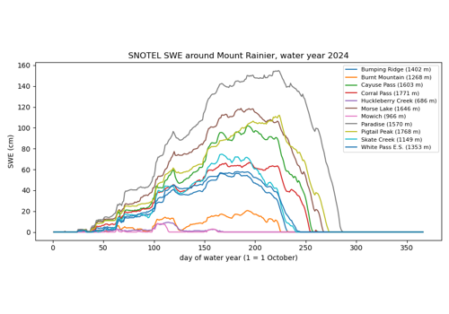
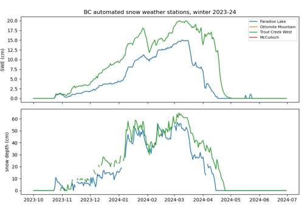
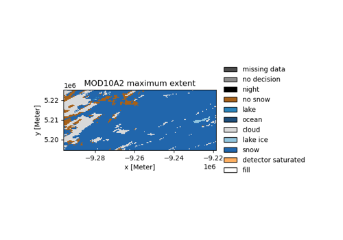
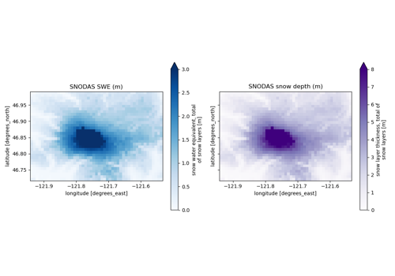
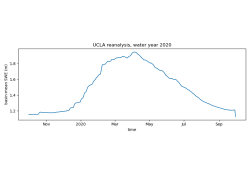
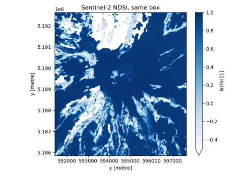
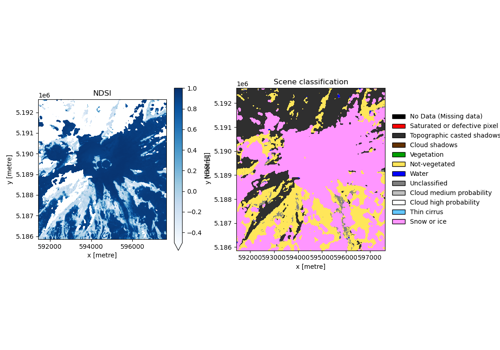
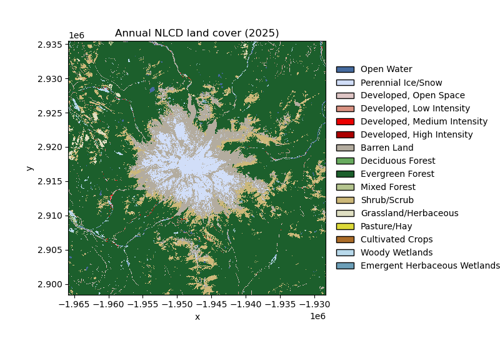
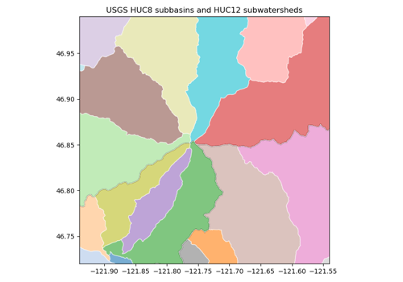
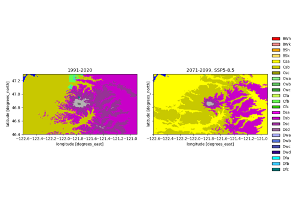

Example gallery#
One short script per product: load it over one area of interest and draw one figure. Every script here is executed when the docs are built, so a figure on this page is a figure the package produced against live data on that day.
Examples marked not executed in this build need provider credentials and run only in the scheduled build (Credentials); everything else runs on every pull request.
Each page offers the script and a Jupyter notebook to download.
Stations#
Point observations of SWE and snow depth from five public snow networks, and the daily archive that pre-downloads them all.

SNOTEL snow water equivalent at Mount Rainier

British Columbia automated snow weather stations
Snow#
Snow classifications, masks, cover and snow water equivalent.

MODIS snow cover, raw bytes and binary snow

SNODAS: the authoritative archive against the Earth Engine mirror


UCLA snow reanalysis, and when virtualization pays off
SAR#
Sentinel-1 radiometrically terrain-corrected backscatter and the local incidence angle.
Sentinel-1 backscatter and the local incidence angle
Optical imagery#
Passive optical products: Sentinel-2, HLS and PlanetScope.


PlanetScope beside Sentinel-2, and the UDM2 snow band

Sentinel-2 snow index, and the two catalogs side by side
Terrain#
Digital elevation models and topographic indices.
Land cover#
Land cover, forest cover and vegetation products.

Annual NLCD land cover for a Cascades basin
Hydrography#
Basin and watershed boundaries.

Watersheds around Mount Rainier, and the basin they drain to
Climate and reanalysis#
ERA5 / ERA5-Land reanalysis and the Köppen-Geiger climate classification.

Köppen-Geiger classes, present and projected